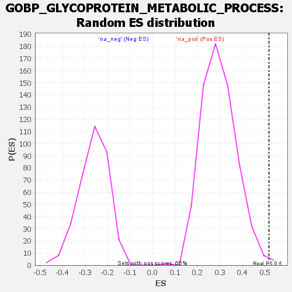

Profile of the Running ES Score & Positions of GeneSet Members on the Rank Ordered List
| Dataset | rank |
| Phenotype | NoPhenotypeAvailable |
| Upregulated in class | na_pos |
| GeneSet | GOBP_GLYCOPROTEIN_METABOLIC_PROCESS |
| Enrichment Score (ES) | 0.5172774 |
| Normalized Enrichment Score (NES) | 1.7440337 |
| Nominal p-value | 0.0045941807 |
| FDR q-value | 0.5843667 |
| FWER p-Value | 0.982 |
| SYMBOL | RANK IN GENE LIST | RANK METRIC SCORE | RUNNING ES | CORE ENRICHMENT | |
|---|---|---|---|---|---|
| 1 | HS6ST1 | 4 | 177.151 | 0.1421 | Yes |
| 2 | MOGS | 6 | 165.599 | 0.2762 | Yes |
| 3 | CHPF | 32 | 79.003 | 0.3290 | Yes |
| 4 | LMF1 | 65 | 58.499 | 0.3619 | Yes |
| 5 | PXYLP1 | 105 | 47.474 | 0.3827 | Yes |
| 6 | TM9SF2 | 162 | 38.975 | 0.3887 | Yes |
| 7 | B4GAT1 | 193 | 35.469 | 0.4038 | Yes |
| 8 | FBXO44 | 230 | 32.327 | 0.4137 | Yes |
| 9 | NAGLU | 239 | 31.195 | 0.4353 | Yes |
| 10 | POGLUT2 | 244 | 30.877 | 0.4586 | Yes |
| 11 | CHST12 | 260 | 29.790 | 0.4760 | Yes |
| 12 | FBXO2 | 277 | 28.761 | 0.4920 | Yes |
| 13 | FUT2 | 322 | 25.901 | 0.4930 | Yes |
| 14 | RNF103 | 407 | 21.361 | 0.4719 | Yes |
| 15 | CHST15 | 409 | 21.294 | 0.4888 | Yes |
| 16 | SLC35D1 | 455 | 19.378 | 0.4839 | Yes |
| 17 | GNS | 473 | 18.898 | 0.4915 | Yes |
| 18 | ABCA2 | 495 | 18.224 | 0.4967 | Yes |
| 19 | SRD5A3 | 530 | 16.987 | 0.4950 | Yes |
| 20 | SLC2A10 | 588 | 15.379 | 0.4815 | Yes |
| 21 | POGLUT1 | 597 | 15.256 | 0.4902 | Yes |
| 22 | XYLT2 | 611 | 14.947 | 0.4964 | Yes |
| 23 | TMTC4 | 615 | 14.881 | 0.5071 | Yes |
| 24 | POGLUT3 | 620 | 14.756 | 0.5173 | Yes |
| 25 | NECAB3 | 807 | 10.772 | 0.4410 | No |
| 26 | MGAT3 | 820 | 10.601 | 0.4442 | No |
| 27 | FBXO6 | 849 | 10.100 | 0.4396 | No |
| 28 | HYAL1 | 911 | 9.269 | 0.4192 | No |
| 29 | B3GNT7 | 983 | 8.163 | 0.3934 | No |
| 30 | GPC1 | 1114 | 6.508 | 0.3393 | No |
| 31 | B3GNT4 | 1197 | 5.495 | 0.3063 | No |
| 32 | MAN1C1 | 1202 | 5.435 | 0.3088 | No |
| 33 | LARGE1 | 1238 | 5.195 | 0.2971 | No |
| 34 | SULF2 | 1255 | 5.067 | 0.2939 | No |
| 35 | JAK3 | 1260 | 5.035 | 0.2961 | No |
| 36 | ADAMTS12 | 1392 | -4.123 | 0.2396 | No |
| 37 | FUT9 | 1522 | -5.984 | 0.1855 | No |
| 38 | HBEGF | 1535 | -6.292 | 0.1851 | No |
| 39 | ST8SIA4 | 1574 | -7.132 | 0.1736 | No |
| 40 | GALNT3 | 1683 | -10.573 | 0.1328 | No |
| 41 | TET1 | 1751 | -13.025 | 0.1128 | No |
| 42 | FUT4 | 1778 | -13.951 | 0.1122 | No |
| 43 | EXTL2 | 1845 | -17.683 | 0.0964 | No |
| 44 | PTX3 | 1927 | -21.073 | 0.0765 | No |
| 45 | EDEM1 | 2047 | -30.964 | 0.0473 | No |
| 46 | RAB1A | 2161 | -45.840 | 0.0329 | No |
